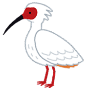

Welcome to the forest of quiz!!
日々の生活に少しだけ役に立つかもしれないクイズです。スキマ時間に挑戦してみてね！
Emmetは、HTMLとCSSを効率よく書くためのエディター向けのプラグインです。
暗号みたいで面白いので、クイズにしてみました。楽しみながら確認してみてくださいね。
注：公式サイトのCheatSheetを元に作成しています。

Emmet記法(HTML編)
クイズに挑戦してみよう！
Emmet記法(CSS編)
クイズに挑戦してみよう！
百人一首のクイズです！！与えられた上の句に続く、下の句を三択で選びます。
百人一首
クイズに挑戦してみよう！